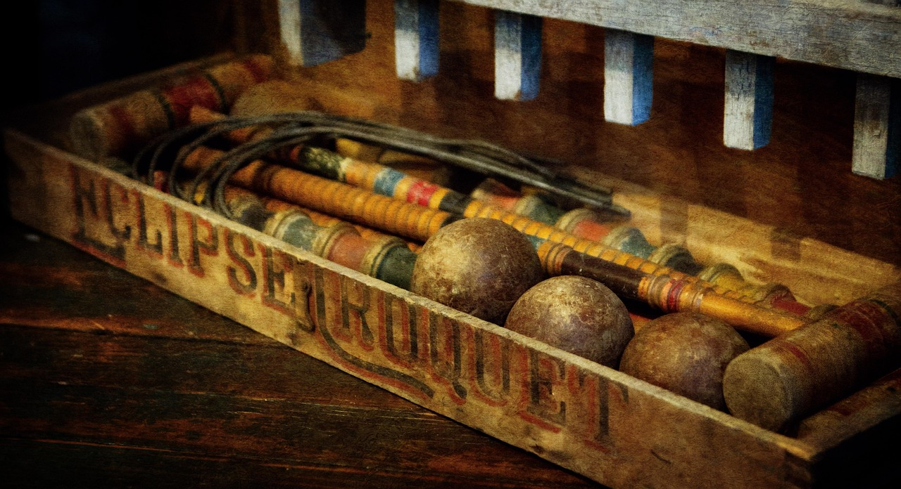

What croquet is, the games played at Stephens, and where to read more about the sport's history.

Croquet, played on specially built courts using precision mallets, balls and hoops, is an addictive game of skill and strategy. It combines strategy and precision and is a bit like snooker on grass, or a combination of chess and golf.
The basics are easy to learn, and yet there is always a new level for those who seek a challenge.
Croquet is a competitive sport with a relaxed, sociable atmosphere, and a strong tradition of sportsmanship. A system of handicapping is in place so that players of differing abilities are able to compete on an equal footing against each other.
It is one of the few outdoor sports in which men and women compete equally.